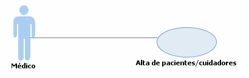

Visión general
Principio
Paquete
Elemento
Documentación UML de Alta de pacientes/cuidadores
Modelo de casos de uso::Desarrollo del estudio::Alta de pacientes/cuidadores::Casos de uso Alta de pacientes/cuidadores
Diagrama Casos de uso Alta de pacientes/cuidadores

Propiedades:
View
Nombre
Casos de uso Alta de pacientes/cuidadores
Tipo
Usecase Diagrama
Visión general
Principio
Paquete
Elemento
Documentación UML de Alta de pacientes/cuidadores